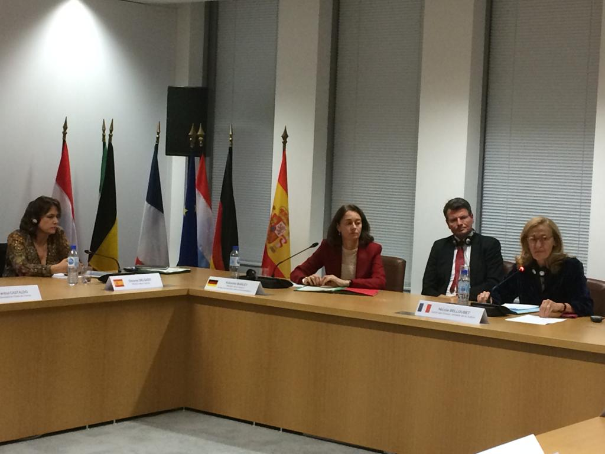
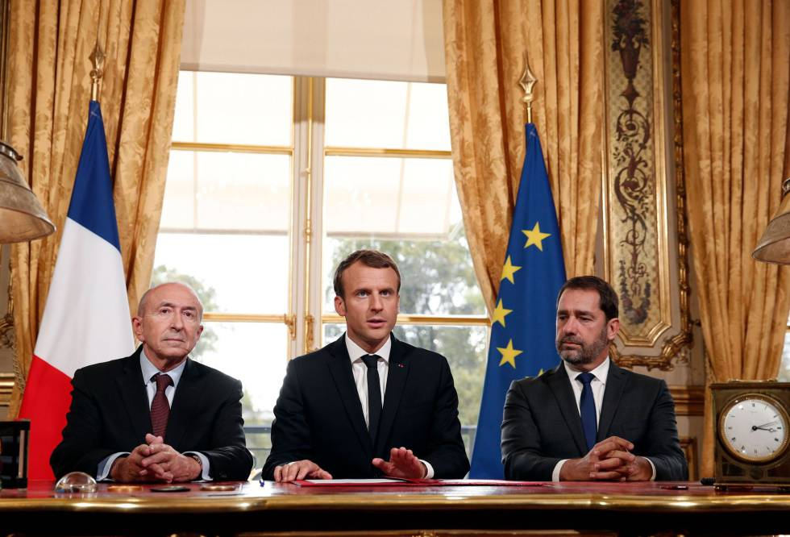

INSTITUCIONES
AQUELLAS QUE TRABAJAN DIA CON DIA CONTRA EL TERRORISMO

Accion del Consejo de Seguridad contra AlQaeda
La accion de la Asamblea General

La accion del Consejo de Seguridad contra el terrorismo.

Derechos Humanos y la lucha contra el terrorismo
EVENTOS
TU PUEDES ASISTIR Y PONER TU GRANITO DE ARENA!
FECHAS TERRORISTAS
ENTRE 2014 Y 2018 FRANCIA SUFRIÓ 8 ATENTADOS
2015
9 de enero
Toma de rehenes supermecado kosher en París. 4 muertos.
2015
26 de junio
Ataque en empresa gasística en Saint-Quentin-Fallavier. 1 muerto.
2015
13 de noviembre
Serie de atentados en París (Bataclán, Estadio de Francia, etc.). 130 muertos.
2016
14 de julio
Atropello en el Día Nacional de Francia en Niza. 84 muertos.
¿POR QUE OCURRIERON LOS ATENTADOS TERRORISTAS EN PARIS?
El analista político francés Lorenzo Müller considera que los atentados terroristas del viernes en París "respondieron a dos razones principales: el rol de Francia en el escenario internacional y en la lucha contra el Ejército Islámico, y la falta de integración de muchos norteafricanos y musulmanes aquí en Francia".
"La política seguida por los diversos gobiernos, de izquierda y de derecha, no ha sido al final muy eficiente en términos de integración y de aceptación, por parte de la población musulmana, de los valores de la República", subrayó. Müller indicó que "una parte de la comunidad musulmana no se ha integrado después de dos o tres generaciones pasadas en este país. Son gente que tienen todavía problemas de identidad nacional. No son norteafricanos, no son franceses, viven con un malestar y este malestar tiene que ser corregido", dijo, señalando que esta es la única forma de intergrarlos a la república francesa.
MEDIDAS DE PREVENCIÓN
¿NO SABES COMO PREVENIR EL TERRORISMO? TE DEJO ALGUNAS RECOMENDACIONES...
El plan Vigipirate, dispositivo permanente de vigilancia, prevención y protección, es una de las principales herramientas de lucha antiterrorista en Francia.
EL PLAN VIGIPIRATE
Efectivos policiales y de la gendarmería, apoyados por soldados del ejército francés, han sido desplegados permanentemente en los puntos sensibles del territorio.
LA OPERACIÓN SENTINELLE
Para la vuelta a las aulas en 2016, el Estado ha invertido 30 millones de euros con el fin de reforzar la seguridad de los estudiantes en los campus.
CENTROS UNIVERSITARIOS
Son recomendables algunas medidas de sentido común para disfrutar de una estancia segura en Francia.
SEGURIDAD EN GENERAL
Diferentes números de emergencias permiten contactar con los servicios de socorro gratuitamente en cualquier momento.
LOS NÚMEROS DE EMERGENCIA